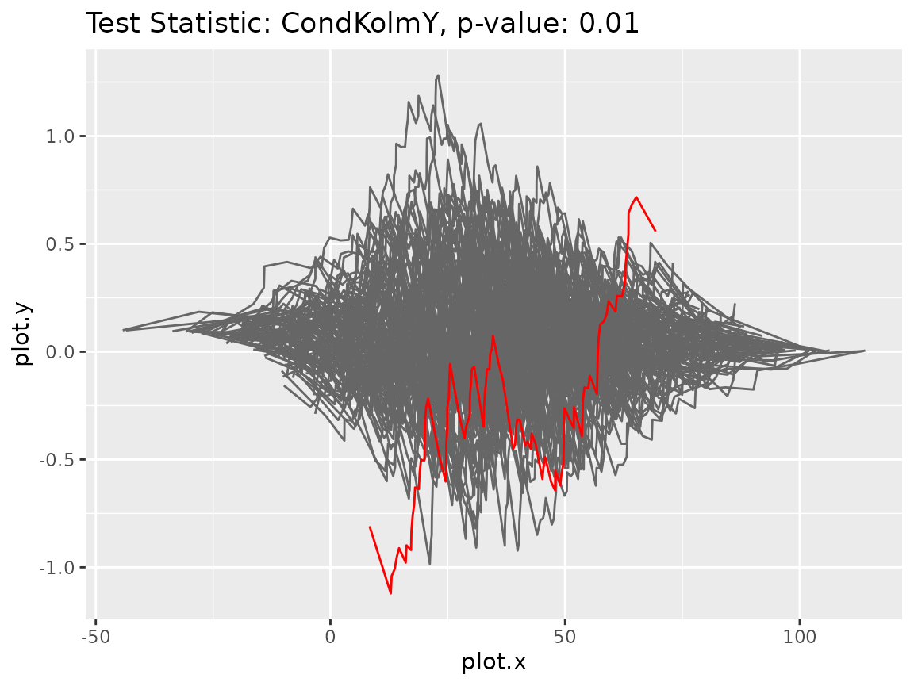
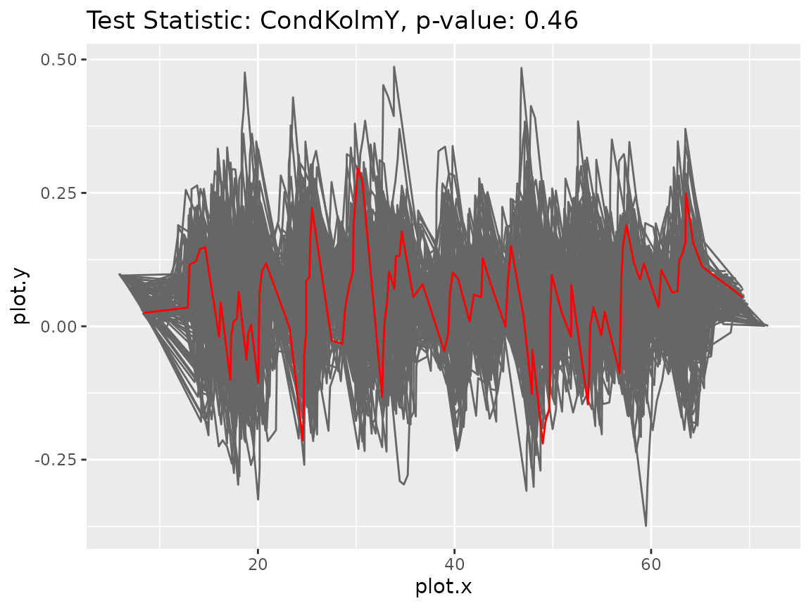

The gofreg package: Perform goodness-of-fit tests for parametric regression
Source:vignettes/gofreg.Rmd
gofreg.RmdTypical usage
- Generate or load a dataset
- Fit a parametric regression model to the given data
- Compute the p-value of the fitted model using one of the available test statistics
Example
In this example, we will fit a generalized linear model (GLM) to an artificially created dataset. It consists of two covariates, one of them normally and the other one uniformly distributed, and the response variable following a classical linear model with normal distribution.
set.seed(123)
n <- 100
x <- cbind(rnorm(n, mean = 3), runif(n, min = 1, max = 10))
model_true <- GLM.new(distr = "normal", linkinv = identity)
params_true <- list(beta = c(2, 6), sd = 1)
y <- model_true$sample_yx(x, params_true)
data <- dplyr::tibble(x = x, y = y)First, we fit the correct model to the data.
model_test <- GLM.new(distr = "normal", linkinv = identity)
model_test$fit(data, params_init = list(beta = c(1,1), sd = 5), inplace = TRUE)
print(model_test$get_params())#> $beta
#> [1] 1.950653 6.027008
#>
#> $sd
#> [1] 0.9268118The parameters estimates are very close to the true values. To assess whether the fitted model fits to the given data, we perform a bootstrap-based goodness-of-fit test using the conditional Kolmogorov test statistic for the marginal distribution of Y.
gt <- GOFTest$new(data = data, model_fitted = model_test,
test_stat = CondKolmY$new(), nboot = 100)
print(gt$get_pvalue())#> [1] 0.46As we would expect, the p-value is rather high, so the model is not rejected. Next, we will fit a wrong model to the data. In particular, we exclude the second covariate.
model_test <- GLM.new(distr = "normal", linkinv = identity)
data_miss <- dplyr::tibble(x = data$x[,1], y = data$y)
model_test$fit(data_miss, params_init = list(beta = c(2), sd = 2),
inplace = TRUE)
print(model_test$get_params())#> $beta
#> [1] 11.68109
#>
#> $sd
#> [1] 17.91058It can be seen that the variance was estimated to be rather high which is reasonable as it includes the part of the variance that could be explained when taking the second covariate into account. The corresponding p-value is computed in the following code chunk.
gt2 <- GOFTest$new(data = data_miss, model_fitted = model_test,
test_stat = CondKolmY$new(), nboot = 100)
print(gt2$get_pvalue())#> [1] 0.01As the p-value is very low, the model hypothesis should be rejected. So the test reveals the mistake in the model assumption. To further investigate the discrepancy, we could look at the plots of the processes underlying the test statistic.
gt2$plot_procs()
It can be seen that the original process (red line) behaves very differently than its bootstrap versions (gray lines). For comparison purposes, we also plot the processes in case the correct model was fitted.
gt$plot_procs()
This time, the original process (red line) behaves very similar to its bootstrap versions (gray lines). It does not show any more extreme behavior.
Parametric Regression Models
Here is a list of parametric regression models that are available in
the gofreg package:
-
NormalGLM: Generalized linear model with normal distribution -
GammaGLM: Generalized linear model with gamma distribution -
ExpGLM: Generalized linear model with exponential distribution -
WeibullGLM: Generalized linear model with Weibull distribution -
NegBinomGLM: Generalized linear model with negative binomial distribution
The package also offers the option to use other user-defined models.
For instructions on how to implement new models see
vignette("New-Models").
Test Statistics
Here is a list of test statistics that are available in the
gofreg package:
-
CondKolmXY: Conditional Kolmogorov of the joint distribution of defined in Andrews (1997) doi:10.2307/2171880 -
SICM: Simulated integrated conditional moment test defined in Bierens & Wang (2012) doi:10.1017/S0266466611000168 -
MEP: Marked Empirical Process defined in Dikta & Scheer (2021) doi:10.1007/978-3-030-73480-0 -
CondKolmY: Conditional Kolmogorov of the marginal distribution of defined in Kremling & Dikta (2024) arXiv:2409.20262
The package also offers the option to use other user-defined test
statistics. For instructions on how to implement new test statistics see
vignette("New-TestStatistics").
Censored data
The package can also be used to fit parametric regression models and
perform goodness-of-fit tests for randomly right-censored survival times
.
In this case, the loglik and resample
arguments in the ParamRegrModel$fit() and
GOFTest$new() methods have to be specified. Moreover, the
data object needs to be a data.frame() with
tags “x”, “z” and “delta” with
representing the covariates,
the censored times and
the censoring indicators. A test statistic for the censored setting is
given by CondKolmY_RCM.
Here is an example with artificial data generated from a normal GLM with normally distributed censoring times.
n <- 100
x <- cbind(runif(n), rbinom(n, 1, 0.5))
model <- NormalGLM$new()
y <- model$sample_yx(x, params = list(beta = c(2, 3), sd = 1))
c <- rnorm(n, mean(y) * 1.2, sd(y) * 0.5)
data <- dplyr::tibble(x = x, z = pmin(y, c), delta = as.numeric(y <= c))
model$fit(data, params_init = list(beta = c(1, 1), sd = 3), inplace = TRUE,
loglik = loglik_xzd)
print(model$get_params())#> $beta
#> [1] 2.090486 2.867202
#>
#> $sd
#> [1] 0.965581It can be seen that the estimated parameters are close to the true parameters and . Now, we compute the corresponding p-value using the Conditional Kolmogorov test statistic for the marginal distribution of under random censorship.
gt <- GOFTest$new(
data = data, model_fitted = model, test_stat = CondKolmY_RCM$new(),
nboot = 100, resample = resample_param_cens, loglik = loglik_xzd
)
print(gt$get_pvalue())#> [1] 0.46The p-value is rather high and the model is not rejected which is expected since we fitted the correct model.